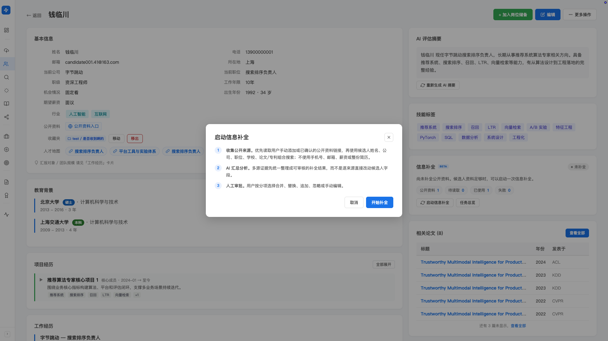
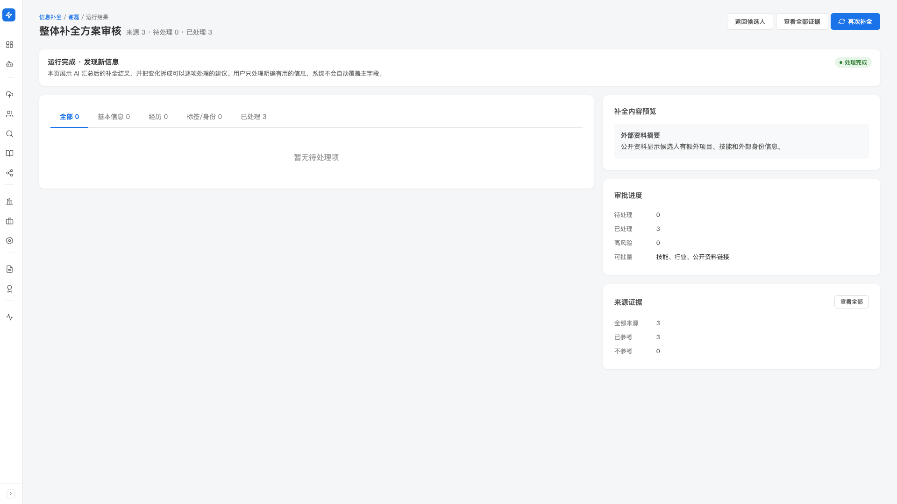
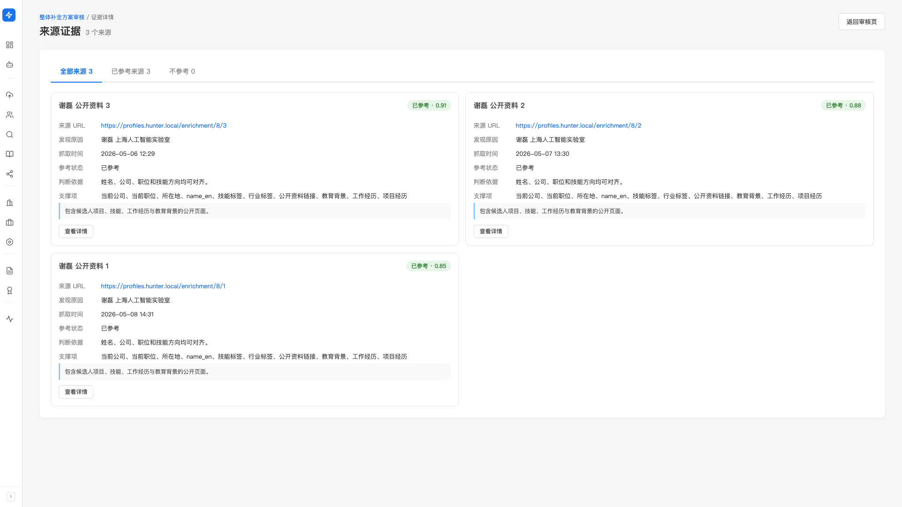

候选人档案焕新
库里的简历是一年前的，候选人现在跳槽了、出新论文了、晋升了——但你不知道。 「档案焕新」让 AI 从公开渠道抓取候选人最新动态，汇总成可审核的补全建议， 你按分项采纳，不擅自改原档。
产品里对应左侧 sidebar「寻访（找人）」分组下的「信息补全」（Beta）。 也可以在任意候选人详情页右上角点「启动信息补全」按钮单点触发。
什么时候用？
- 沉睡候选人激活前：半年前推过的人现在到哪里了，先 refresh 再判断要不要联系
- 客户突然问起某人：库里只有 18 个月前的简历，先焕新到最新再答复
- 定期巡检关键候选人：你重点跟进的 50-100 人，每季度跑一遍焕新
怎么触发焕新
单个候选人：从详情页启动
-
打开候选人详情页
候选人管理页点候选人姓名即可进入。
-
点右上角「启动信息补全」按钮
按钮上有 Beta 标识。如果有任务正在进行中，按钮会显示为「信息补全正在进行中」并 disabled。
-
看 modal 里的三步流程，点「开始补全」
启动 modal 会展示完整流程：① 收集公开来源 → ② AI 汇总分析 → ③ 人工审批。点「开始补全」任务进入后台运行。
-
等任务完成，看通知
任务完成后，候选人详情页右侧的「信息补全」卡片会更新状态徽章： 补全中、发现新信息、处理完成。

在「信息补全」总览页统一管理
左侧 sidebar 点「信息补全」进入总览页。 在这里可以看到全部任务（包括所有候选人的），统一筛选/监控/处理。
「信息补全」总览页长什么样
从上到下：
- 4 个 KPI：今日运行任务/发现新信息/待处理审批项/失败任务（红色）
- 4 个 Tab： 发现新信息（最该看）· 补全中 · 运行完成 · 全部
- 任务列表：每行一个 run，展示候选人、状态、补全条目数、操作按钮
这个 Tab 只显示真正抓到新东西的任务，避免你逐个翻无果的任务。 按行点进去就能审批。
审批补全结果
从总览页点某条任务，或从候选人详情页的信息补全卡片点进去， 会进入整体补全方案审核页。
审核页的结构
- 顶部状态条：本次运行的整体状态（运行中、已完成、失败）+ 进度阶段（如有）
- 4 个分类 Tab： 全部（按总数）· 基本信息（姓名、联系方式、当前公司等）· 经历（工作/教育/项目经历）· 标签/身份（论文、专利、学术身份匹配等）· 已处理
- 顶部操作按钮：返回候选人/查看全部证据/全部忽略/再次补全

逐条审批
每条补全建议是一项独立的审批项，你可以分项处理。常见的处理动作：
- 合并：把新信息和原档合并（适合多条经历类）
- 替换：用新值替换原值（适合"当前公司"这类单值字段）
- 追加：保留原值的同时加上新值
- 忽略：不采纳这条建议
- 手动编辑：在 AI 建议的基础上微调后保存
每条审批项都附带来源证据——哪个网页、哪段文字、什么时候抓到的。 顶部「查看全部证据」按钮可以一次性看所有来源。 不放心时点开看一眼再决定。

Hunter 怎么找候选人的新信息？
启动 modal 里写得很清楚，分三步：
-
收集公开来源
优先读取你手动添加或已确认的候选人公开资料链接（个人主页、GitHub、OpenReview 等）， 再用姓名 + 公司 + 职位 + 学校 + 论文/专利等公开字段组合搜索。
不使用手机号、邮箱、薪资期望、整份简历——这些隐私字段不会出现在任何对外查询里。
-
AI 汇总分析
多源证据先统一整理成可审核的补全结果，不直接改候选人字段。 AI 会判断哪些是新信息、哪些与原档冲突、哪些只是同名人的干扰，再分项给出建议。
-
人工审批
按分项选择合并/替换/追加/忽略/手动编辑。 未经你审批的内容不会进入候选人档案，原档保持不变。
运行控制
停止一个任务
发现任务跑偏了（比如候选人是常见姓名，AI 误识别成了另一个人），可以中途停止。 在总览页或运行页找到该任务，点「停止」，弹出确认 modal 后点「确认停止」。
停止后系统不再继续搜索、抓取或调用 AI； 已记录的来源和证据会保留，候选人主字段不会被修改。
再次补全
过一段时间想再跑一遍（候选人可能又有新动态）——在任意运行页或候选人详情页点 「再次补全」。新任务独立运行，不影响历史结果。
让焕新更准的小动作
候选人详情页编辑模式下有「公开资料链接」字段—— 如果你知道候选人的个人主页、GitHub、OpenReview profile、领英主页等公开 URL，提前填进去。 焕新会优先从这些已知链接抓信息，比 AI 凭名字搜准得多。
「张伟」「王芳」这类常见姓名，单凭名字搜会有大量同名干扰。 如果候选人有论文或专利，先到「学术 & 专利情报」页关联好， 焕新时论文专利会作为强身份锚点，准确度大幅提升。
常见提示
候选人档案里只有姓名，没有公司、学校、邮箱、论文等其他身份信号—— Hunter 不能确信能找到对的人，会拒绝启动。 手动补充一两个公司或学校字段，再点「启动信息补全」。
AI 没有在公开网络上找到关于这位候选人的可靠新信息—— 可能是候选人本人公开痕迹少，也可能是名字太常见、相关公司太多。 可以试试先填好「公开资料链接」再重新跑。
所有补全结果都是建议，不是事实。 AI 可能把另一个同名人的信息搬到了这位候选人身上。 每条都要看一眼证据再决定要不要采纳，特别是涉及当前公司、职级这种敏感字段。